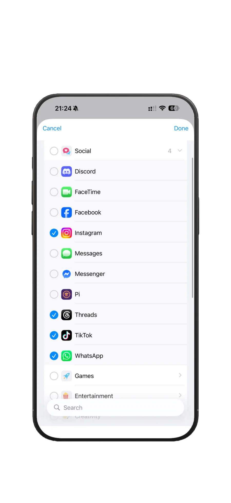

“Nice to the point app! Does it job quietly and effectively. Please keep on updating”
Time awareness for real focus
A focus timer that works with your attention.
Start when you need to focus. Get reminders when you've disappeared too deep. Block the apps that hijack your attention.
A flexible focus timer, hyperfocus timer, time tracker, and Pomodoro alternative for work, study, and intentional breaks.
Time awarenessKeep session time visible.
Flexible boundariesStop, continue, or switch.
Focus remindersShow time while you work.
App blockingReduce attention hijacking.
Tap phone to try timer
From the app stores
Loved by Flowtime users.
“This beautiful well designed app from an indie dev… Totally worth it in my opinion.”
“it is a nice app to me, easy to use”
“A good time tracker app”
“Top! braucht keine unnötigen Konto/Login Daten und macht genau was es soll. Sehr empfehlenswert!”
“Overall, I’m enjoying Flowtime for what it sets out to do (hence the five star rating).”
“Super Zeit-tracker! Genial!!”
Swipe to read more reviews →
Product facts
What is Flowtime?
Flowtime combines flexible focus sessions, Pomodoro, reminders, time tracking, and optional app blocking. It helps you notice where your time goes, stay aware during deep focus, and stop intentionally—without requiring an account.
Focus modes
What focus modes does Flowtime support?
Flowtime supports four distinct focus tracking modes tailored for work, study, time awareness, hyperfocus check-ins, and intentional breaks.
Classic Timer
Track time with a simple count-up timer.

Pomodoro
Focus and break in configurable intervals.

Flowmodoro
Focus until you stop, then take a break based on session length.
Flow Session
Set a target, get gentle reminders, and decide when to stop.

Does this feel familiar?
Time can disappear while you work.
Flowtime is built for the everyday moments when attention drifts, stretches, or gets pulled elsewhere.
Time blindness
You start one task and suddenly hours have passed. A visible session timer and focus reminders make passing time easier to notice.
Hyperfocus
Getting focused is not always the problem. Sometimes stopping is. Flow Sessions create flexible boundaries without pulling you out at the wrong moment.
Attention hijacking
One notification becomes twenty minutes of scrolling. App blocking protects intentional focus time and reduces context switching.
Rigid timers
Pomodoro can help, but a fixed interval can interrupt your best work. Flowtime supports Pomodoro and flexible focus sessions.
Why Flowtime exists
Why was Flowtime created?
I built Flowtime because most productivity tools added more friction than they removed. I wanted a timer that made it easy to begin, kept time visible, and helped me step away when I had done enough.
Flowtime began as a way to focus longer. Over time, it also became a way to unfocus on purpose. Sometimes I start a one-hour FlowSession, block distracting apps, and go for a walk with my dog. Knowing the timer is running and the usual apps are unavailable makes it easier to be present instead of repeatedly checking my phone or thinking about work.

Distraction control
Block distractions without giving up control.
Flowtime helps reduce distractions by temporarily blocking selected apps during a focus session. Instead of relying on willpower alone, you decide in advance which apps should be unavailable while you work.
If you genuinely need access to a blocked app, you can always choose to override the block intentionally—adding a small moment of awareness before switching tasks. This approach helps reduce impulsive distractions while keeping you in control.
Interrupting the Autopilot: Making Conscious Decisions When Blocking Apps

History & Reports
How do Flowtime reports help track focus?
Flowtime provides visual time breakdown charts by project, timer mode, and custom time ranges.
Pricing
Free vs. Pro
Flowtime offers a comprehensive Free tier with essential timers and optional Pro upgrades for unlimited customization and analytics.
Free
What is included in Flowtime Free?
- Standard Timer
- Standard notifications
- Pomodoro (fixed intervals)
- 1 Project
- 1 day of History
Pro
What features are in Flowtime Pro?
- Flow Sessions
- Flowmodoro
- Custom Pomodoro intervals
- Unlimited Projects
- Unlimited History
- App Blocking
- Quick Start Templates
- Reminder Profiles
- UI customization (accent colors)
- Reports & Exports
- All future pro features

FAQ
Frequently Asked Questions about Flowtime
What is Flowtime?
Flowtime combines flexible focus sessions, Pomodoro, reminders, time tracking, and optional app blocking. It helps you notice where your time goes, stay aware during deep focus, and stop intentionally—without requiring an account.
Who is Flowtime for?
Flowtime is for people who want to make focus time visible without managing a heavy workspace. It is especially suited to work, study, creative projects, and simple personal time tracking.
How is Flowtime different from Pomodoro?
Pomodoro is one structured interval method. Flowtime includes Pomodoro, but also works as a flexible Pomodoro alternative with open-ended Flow Sessions, target duration, standard time tracking, project selection, reminders, and reviewable focus history.
How is Flowtime different from Forest, Toggl, or Session?
Flowtime focuses on simple personal focus tracking without account-heavy setup. It is available for iPhone and Android and is designed around flexible sessions rather than only fixed intervals.
Is Flowtime free?
Yes. Free includes the standard timer, Flow Session, Pomodoro, 2 projects, and 2 Quick Start templates. Pro is available for $3.99/month, $24.99/year, or $49.99 lifetime to unlock unlimited projects, templates, custom reminders, advanced Pomodoro, and analytics.
What platforms does Flowtime support?
Flowtime is available for iPhone and Android. The web experience is designed to match the app with the same simple, minimal design language.
How many languages does Flowtime support?
Flowtime currently supports 10 languages: English, German, Spanish, French, Italian, Japanese, Korean, Dutch, Polish, and Portuguese.
What is a Flow Session?
Flow Sessions let you set a target duration without rigid intervals. They are designed for focused, flexible work sessions.
Does Flowtime use the Pomodoro technique?
Yes. Free includes the classic 25 / 5 Pomodoro pattern, while Pro adds advanced Pomodoro settings.
Is my data private?
No account is required. The privacy policy states that timer and project data are stored locally on your device and are not sent to Flowtime servers.
What does Flowtime Pro include?
Flowtime Pro is available for $3.99/month, $24.99/year, or $49.99 lifetime, and unlocks:
- Unlimited projects
- Unlimited Quick Start templates
- Custom reminder profiles
- Advanced Pomodoro controls
- Analytics
- Break tracking and timer ring color customization
Where can I download Flowtime?
Flowtime is available on the App Store for iPhone and on Google Play for Android.
Social
Follow the build
Browse the latest Flowtime updates, launch notes, design progress, and social posts in one place.